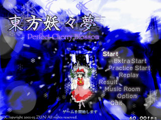

| ■タイトルメニュー |
|---|
| Ｓｔａｒｔ |
|
通常のゲームを開始します（難易度選択画面に移行します） ステージ数は難易度共通で、全６ステージです。 |
| ＥｘｔｒａＳｔａｒｔ |
|
エキストラステージを開始します（条件を満たしていないと選択できません） ステージ数は１ステージです。 初期プレイヤー数３で固定され、コンティニューは出来ません エキストラ条件はノーコンティニューでクリアすることです |
| ＰｒａｃｔｉｃｅＳｔａｒｔ |
|
練習モードを開始します 練習モードは、１ステージだけをプレイするモードです。 その難易度、キャラ、武器で一度クリアしたステージまで選択できます（コンティニューしても可） 各ステージのスコアが記録されますので、スコアアタックも出来ます 初期プレイヤー数３で固定され、コンティニューは出来ません |
| Ｒｅｐｌａｙ |
|
リプレイを再生するモードです |
| Ｓｃｏｒｅ |
|
スコア、御札戦歴を見るモードです |
| ＭｕｓｉｃＲｏｏｍ |
|
音楽室に入ります |
| Ｏｐｔｉｏｎ |
|
オプションモードに入ります |
| Ｑｕｉｔ |
|
ゲームを終了します |